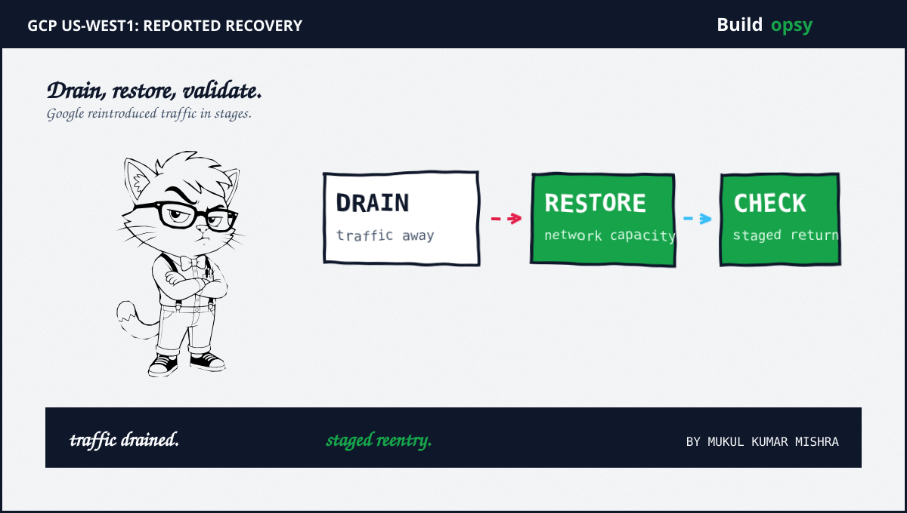

1. What Google's Final Report Establishes
Google's detailed report says customer impact in us-west1 ran from 08:00 to 10:22 US/Pacific on August 20, 2026, a reported 2 hours and 22 minutes. The status page's incident header gives a different record window: 08:40 to 12:20 US/Pacific. The page does not reconcile the two. This article uses the detailed report's window for customer impact and preserves the separate status-record interval rather than blending them.
Google lists elevated latency, provisioning failures, increased error rates and service degradations across both control-plane operations and data-plane requests. Its report includes Persistent Disk, Google Kubernetes Engine, Compute Engine, Cloud Storage and IAM among the affected products. The published account does not give customer counts, request rates, packet-loss percentages or a cost estimate.
2. The Cause Was Network Capacity and Rerouting
The final report attributes the disruption to scheduled fiber-optic maintenance that unexpectedly compromised network capacity between data centers in us-west1. Google's automated rerouting mechanisms did not properly redistribute traffic to alternate capacity. Traffic volumes then exceeded available bandwidth in the affected area, causing congestion.
Google says the network degradation produced severe packet loss, request throttling and elevated latency across inter-campus dependencies. Spanner Paxos consensus and the Unified Metadata Server experienced latency spikes; downstream products, including Cloud Storage, IAM, Persistent Disk and GKE, then saw timeouts and errors. Persistent Disk was an affected service, not the initiating disk failure described by the earlier version of this article.
A simple capacity condition captures the design constraint: during maintenance, redirected demand must stay within the capacity left on surviving paths, λredirected ≤ Cremaining. Google published no values for either side, so this inequality explains the mechanism without reconstructing private network telemetry.
3. The Blast Radius Followed Shared Network Dependencies
The report distinguishes the physical trigger from the service symptoms. The capacity loss occurred on inter-campus links within us-west1; network-dependent products experienced different combinations of latency, throttling, provisioning failures and errors. Google's affected-service list is not evidence that every product failed in the same way or for the same duration.
This is why the incident should not be reduced to “Persistent Disk stalled GKE.” The public report identifies packet loss and latency across shared network dependencies, then names Persistent Disk, GKE and IAM among the downstream products affected. It does not describe a disk-control-plane fault or provide a per-product causal trace.

4. Recovery Was a Drain, Restore and Validate Sequence
Google says engineers drained production traffic away from the compromised inter-campus network to limit customer impact. After restoring network capacity, they reintroduced production traffic through controlled validation stages and confirmed service normalization.
The final report says longer-running operations and localized state reconciliation kept some workloads recovering after primary service traffic had normalized. That distinction matters: restoring the physical path did not instantly finish every dependent product's recovery.
5. Guardrails for Planned Network Work
Google's stated follow-up work includes revising scheduled-maintenance protocols, strengthening safety checks and circuit redundancy before routine maintenance, and improving automated regional traffic failover. Those items are listed as remediation work, not as completed outcomes.
For operators, turn that direction into testable gates: verify the remaining path capacity before removing a link; confirm failover actually moves representative traffic; stop the change if loss or latency crosses a defined threshold; and reintroduce traffic in stages after the physical path returns. These are design recommendations based on the reported mechanism, not claims that Google's teams lacked each control.
6. The Verdict
Google's final incident report establishes a network-capacity failure during planned fiber maintenance, ineffective rerouting to alternate capacity, and congestion that propagated through regional service dependencies. It does not support the earlier article's claim that Persistent Disk caused the outage, nor the private RPS, retry, snapshot or cost figures that were built on that premise. Those unsupported reconstructions have been removed.
The remaining open detail is the timing: the detailed report gives customer impact from 08:00 to 10:22 PT, while the incident header lists 08:40 to 12:20 PT. Google does not explain that difference in the public record.
Sources and Method
Incident facts and recovery actions follow Google's final incident report posted August 27, 2026, with the status-page incident history used to preserve its separate incident-record window. The capacity inequality is a general design condition, not a measurement of Google's traffic or network. Recommendations are Buildopsy analysis; no customer losses or private telemetry are estimated.
- Google Cloud Service Health: us-west1 incident report and status history (August 20–27, 2026), Summary, Root Cause, Remediation and Detailed Description of Impact
- Buildopsy: September us-central1 fiber-maintenance incident (a separate event)
- Buildopsy: October us-central1 Cloud Storage write incident (a separate event)